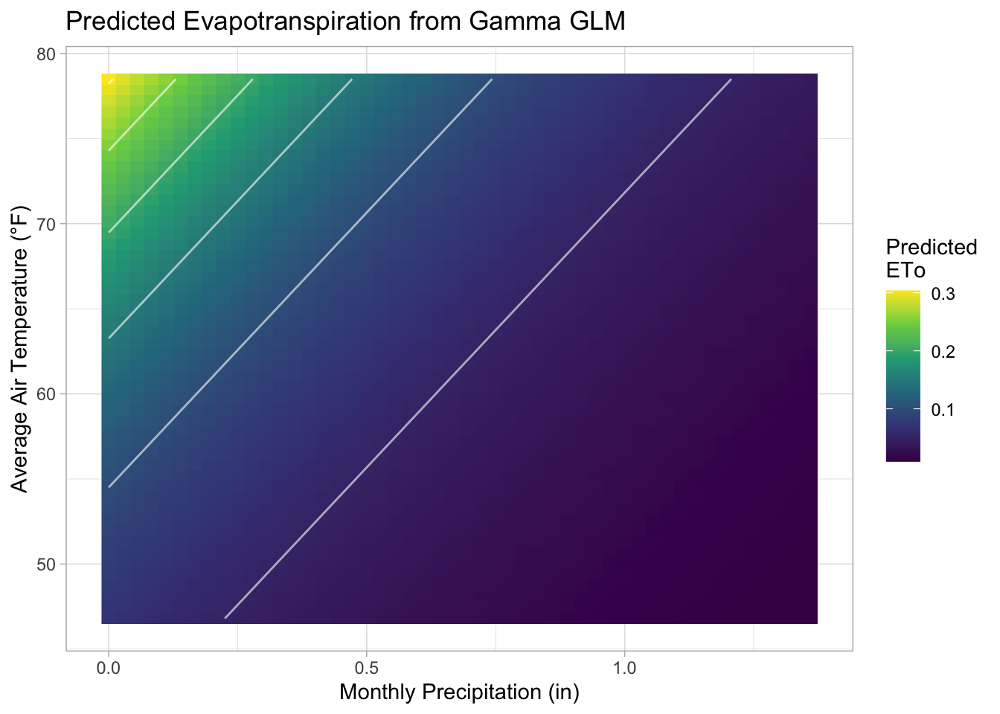
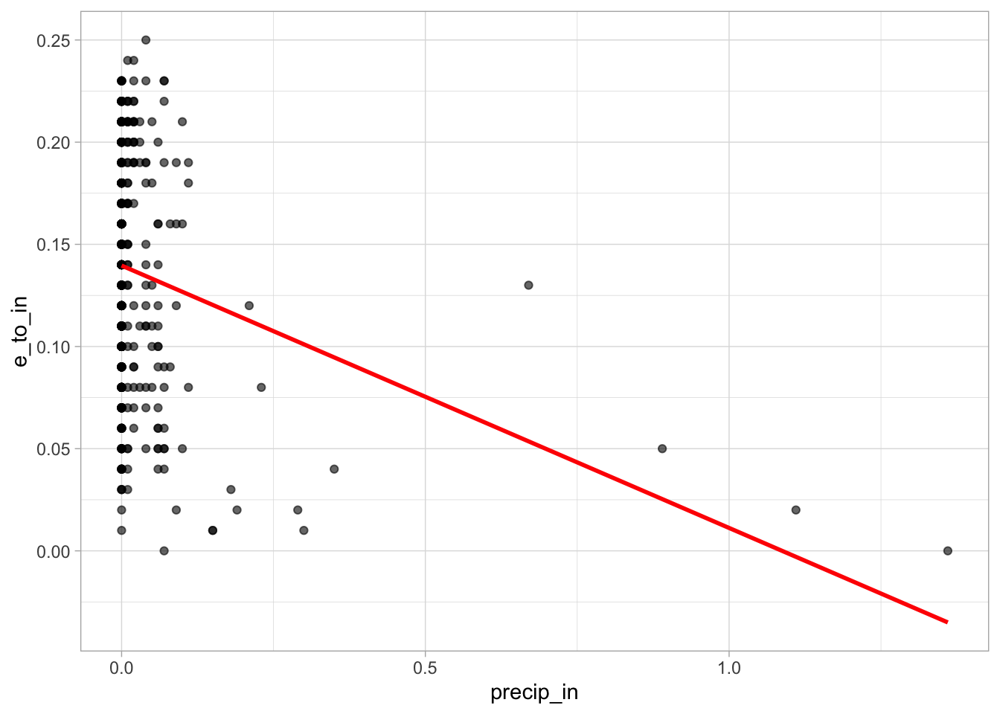

library(tidyverse)
library(here)
library(dplyr)
library(patchwork)
library(knitr)Evapotranspiration and Temperature in Camarillo, CA
From California Irrigation Managment Information System (CIMIS) Station
Import Libraries
Importing Data
eto <- read_csv(here("data/daily_eto_variance_CAM.csv"),
show_col_types = FALSE) %>%
janitor::clean_names()
daily <- read_csv(here("data/daily_data_CAM.csv"),
# R suggested to use
show_col_types = FALSE) %>%
# Helps not have 'qc...6, etc'
janitor::clean_names()
head(eto)Data Cleaning
# Dropping columns that have `qc`
# ETO Dataset
drop <- c("qc_6", "qc_8")
eto[ , !(names(eto) %in% drop)]# A tibble: 426 × 8
stn_id stn_name cimis_region date target_year_e_to_in previous_year_e_to_in
<dbl> <chr> <chr> <chr> <dbl> <dbl>
1 152 Camarillo Central Coa… 9/1/… 0.19 0.17
2 152 Camarillo Central Coa… 9/2/… 0.18 0.13
3 152 Camarillo Central Coa… 9/3/… 0.19 0.15
4 152 Camarillo Central Coa… 9/4/… 0.19 0.18
5 152 Camarillo Central Coa… 9/5/… 0.21 0.17
6 152 Camarillo Central Coa… 9/6/… 0.2 0.16
7 152 Camarillo Central Coa… 9/7/… 0.2 0.18
8 152 Camarillo Central Coa… 9/8/… 0.2 0.18
9 152 Camarillo Central Coa… 9/9/… 0.19 0.18
10 152 Camarillo Central Coa… 9/10… 0.18 0.14
# ℹ 416 more rows
# ℹ 2 more variables: avg_e_to_in <dbl>, difference_percent <dbl># DAILY Dataset
drops <- c("qc_")
daily[ , !(names(daily) %in% drops)]# A tibble: 426 × 33
stn_id stn_name cimis_region date jul e_to_in qc_7 precip_in qc_9
<dbl> <chr> <chr> <chr> <chr> <dbl> <chr> <dbl> <chr>
1 152 Camarillo Central Coast Val… 9/1/… 245 0.19 <NA> 0.09 <NA>
2 152 Camarillo Central Coast Val… 9/2/… 246 0.18 <NA> 0.11 <NA>
3 152 Camarillo Central Coast Val… 9/3/… 247 0.19 <NA> 0.07 <NA>
4 152 Camarillo Central Coast Val… 9/4/… 248 0.19 <NA> 0.11 <NA>
5 152 Camarillo Central Coast Val… 9/5/… 249 0.21 <NA> 0.1 <NA>
6 152 Camarillo Central Coast Val… 9/6/… 250 0.2 R 0.02 <NA>
7 152 Camarillo Central Coast Val… 9/7/… 251 0.2 <NA> 0 <NA>
8 152 Camarillo Central Coast Val… 9/8/… 252 0.2 <NA> 0.01 <NA>
9 152 Camarillo Central Coast Val… 9/9/… 253 0.19 <NA> 0.02 <NA>
10 152 Camarillo Central Coast Val… 9/10… 254 0.18 <NA> 0.01 <NA>
# ℹ 416 more rows
# ℹ 24 more variables: sol_rad_ly_day <dbl>, qc_11 <chr>,
# avg_vap_pres_m_bars <dbl>, qc_13 <chr>, max_air_temp_f <dbl>, qc_15 <chr>,
# min_air_temp_f <dbl>, qc_17 <chr>, avg_air_temp_f <dbl>, qc_19 <chr>,
# max_rel_hum_percent <dbl>, qc_21 <chr>, min_rel_hum_percent <dbl>,
# qc_23 <chr>, avg_rel_hum_percent <dbl>, qc_25 <chr>, dew_point_f <dbl>,
# qc_27 <chr>, avg_wind_speed_mph <dbl>, qc_29 <chr>, wind_run_miles <dbl>, …There is a columnn called ‘Average ETo (in)’ in the dataset. The Station itself has already calculated the Evapotranspiration using the Penman-Monteith (PM) equation.
\[ ET_0 = \frac{0.408 \, \Delta \, (R_n - G) + \gamma \frac{900}{T+273} \, u_2 \, (e_s - e_a)}{\Delta + \gamma (1 + 0.34 \, u_2)} \]
In this project I will use the Total ETo column as my Response Variable. The predictor variables will be Average Air Temperature (F) as well as Total Precipitation (in)
DAG Model
knitr::include_graphics(here::here("images/DAG.png"))
Data Exploratory
hist(daily$e_to_in)
#hist(daily$precip_in)
#hist(daily$temp)
ggplot(data = daily,
aes(x = e_to_in)) +
geom_histogram() +
geom_vline(xintercept = mean(daily$e_to_in),
color = "red",
linetype = "dashed",
linewidth = 1)`stat_bin()` using `bins = 30`. Pick better value with `binwidth`.
# Data type
class(daily$date)[1] "character"#summary(daily)
names(daily) [1] "stn_id" "stn_name" "cimis_region"
[4] "date" "jul" "e_to_in"
[7] "qc_7" "precip_in" "qc_9"
[10] "sol_rad_ly_day" "qc_11" "avg_vap_pres_m_bars"
[13] "qc_13" "max_air_temp_f" "qc_15"
[16] "min_air_temp_f" "qc_17" "avg_air_temp_f"
[19] "qc_19" "max_rel_hum_percent" "qc_21"
[22] "min_rel_hum_percent" "qc_23" "avg_rel_hum_percent"
[25] "qc_25" "dew_point_f" "qc_27"
[28] "avg_wind_speed_mph" "qc_29" "wind_run_miles"
[31] "qc_31" "avg_soil_temp_f" "qc_33" # Check NA's
colSums(is.na(daily)) stn_id stn_name cimis_region date
0 0 0 0
jul e_to_in qc_7 precip_in
0 0 416 0
qc_9 sol_rad_ly_day qc_11 avg_vap_pres_m_bars
419 0 424 0
qc_13 max_air_temp_f qc_15 min_air_temp_f
418 0 408 0
qc_17 avg_air_temp_f qc_19 max_rel_hum_percent
419 0 414 0
qc_21 min_rel_hum_percent qc_23 avg_rel_hum_percent
419 0 419 1
qc_25 dew_point_f qc_27 avg_wind_speed_mph
413 1 413 0
qc_29 wind_run_miles qc_31 avg_soil_temp_f
411 0 411 0
qc_33
341 colSums(is.na(eto)) stn_id stn_name cimis_region
0 0 0
date target_year_e_to_in qc_6
0 0 416
previous_year_e_to_in qc_8 avg_e_to_in
0 313 0
difference_percent
0 map1<- ggplot(data = daily, aes(x = date, y = e_to_in)) +
geom_point() +
labs(title = "Camarillo, Daily ET Over A Year")+
theme_linedraw()
map2<-ggplot(data = daily, aes(x = date, y = avg_air_temp_f)) +
geom_point() +
labs(title = "Camarillo, Daily ET Over A Year")+
theme_linedraw()
(map1+map2)
map3 <- ggplot(data = eto, aes(x = date, y = avg_e_to_in)) +
geom_point() +
labs(title = "Camarillo, ET Over A Year")+
theme_linedraw()
map4 <-ggplot(data = daily, aes(x = date, y = avg_air_temp_f)) +
geom_point() +
labs(title = "Camarillo, Daily Temp Over A Year")+
theme_linedraw()
(map3+map4)
Joining Data
daily_eto <- left_join(eto, daily, by = "date") %>%
janitor::clean_names() %>%
# Remove ALL columns that start with "qc_" - Not needed
select(!starts_with("qc_")) %>%
# Drop double column of site name, number, and region
select(!starts_with(c("cimis_region_y","stn_name_y","stn_id_y")))
# Checking NA's
colSums(is.na(daily_eto)) stn_id_x stn_name_x cimis_region_x
0 0 0
date target_year_e_to_in previous_year_e_to_in
0 0 0
avg_e_to_in difference_percent jul
0 0 0
e_to_in precip_in sol_rad_ly_day
0 0 0
avg_vap_pres_m_bars max_air_temp_f min_air_temp_f
0 0 0
avg_air_temp_f max_rel_hum_percent min_rel_hum_percent
0 0 0
avg_rel_hum_percent dew_point_f avg_wind_speed_mph
1 1 0
wind_run_miles avg_soil_temp_f
0 0 # View first 5 rows
head(daily_eto)# A tibble: 6 × 23
stn_id_x stn_name_x cimis_region_x date target_year_e_to_in
<dbl> <chr> <chr> <chr> <dbl>
1 152 Camarillo Central Coast Valleys 9/1/2024 0.19
2 152 Camarillo Central Coast Valleys 9/2/2024 0.18
3 152 Camarillo Central Coast Valleys 9/3/2024 0.19
4 152 Camarillo Central Coast Valleys 9/4/2024 0.19
5 152 Camarillo Central Coast Valleys 9/5/2024 0.21
6 152 Camarillo Central Coast Valleys 9/6/2024 0.2
# ℹ 18 more variables: previous_year_e_to_in <dbl>, avg_e_to_in <dbl>,
# difference_percent <dbl>, jul <chr>, e_to_in <dbl>, precip_in <dbl>,
# sol_rad_ly_day <dbl>, avg_vap_pres_m_bars <dbl>, max_air_temp_f <dbl>,
# min_air_temp_f <dbl>, avg_air_temp_f <dbl>, max_rel_hum_percent <dbl>,
# min_rel_hum_percent <dbl>, avg_rel_hum_percent <dbl>, dew_point_f <dbl>,
# avg_wind_speed_mph <dbl>, wind_run_miles <dbl>, avg_soil_temp_f <dbl>Hypothesis:
- State your hypothesis for your final project. Using this week’s wildfire lab as an example, your hypothesis could be “The number of wildfires increases with vapor pressure deficit.” That’s an example of a scientific hypothesis. To state the equivalent statistical hypothesis, you first need a model. That’s the second goal of this checkpoint.
Evapotranspiration (ETo) increases with higher air temperature and decreases with higher precipitation.\[ \begin{align} {Eto} &\sim{Gamma(mu,λ)} \end{align} \]
\[
\begin{align}
log(\mu) = β0 + β1(Precipitation) + β2(Temperature)
\end{align}
\]
- Evapotranspiration (ETo) is driven by vapor pressure deficit, radiation, and temperature. On days with higher precipitation, ETo tends to decrease because of cloud cover, lower radiation, and higher humidity.
- Describe your model in statistical notation using the appropriate response family, link function, and predictors. Then use your model to state a statistical hypothesis. Using the wildfire lab again as an example, your statistical hypothesis would be “H0: β_1 = 0; HA: β_1 > 0”.
- I model daily ETo for the Camarillo station using:
$$ \[\begin{align} Precipitation: H0 : B1 = 0 \\ HA : B1 < 0 \\ \end{align}\]
$$ (Eto decreases on wetter days)
\[ \begin{align} Temperature: H0 : B1 = 0 \\ HA : B1 > 0 \end{align} \]
(Eto increases with temperature)
- Eto = evapotranspiration (inches)
- Precipitation = Daily Precipitation (inches)
- Temperature = Average Daily Air Temperature (0B0 F)
- Using a Gamma Model and a link of a log allows to have fitted values of 0-1 remain positive.
Attempt at creating glm and interpretting results
Interested in Evapotranspiration (eto) and average temperature (avg_air_temp_f) in the location of Camarillo, California.
# This will remove any negative integers
daily_eto <- daily_eto %>%
mutate(e_to_in_adj = e_to_in + 1e-6)
# Gamma regression for daily ETo
cam_gamma <- glm(
e_to_in_adj ~ precip_in + avg_air_temp_f,
data = daily_eto,
family = Gamma(link = "log")
)
# Look at results
summary(cam_gamma)
Call:
glm(formula = e_to_in_adj ~ precip_in + avg_air_temp_f, family = Gamma(link = "log"),
data = daily_eto)
Coefficients:
Estimate Std. Error t value Pr(>|t|)
(Intercept) -4.825941 0.176863 -27.29 <2e-16 ***
precip_in -1.495177 0.167630 -8.92 <2e-16 ***
avg_air_temp_f 0.046296 0.002878 16.09 <2e-16 ***
---
Signif. codes: 0 '***' 0.001 '**' 0.01 '*' 0.05 '.' 0.1 ' ' 1
(Dispersion parameter for Gamma family taken to be 0.1343591)
Null deviance: 144.35 on 425 degrees of freedom
Residual deviance: 103.00 on 423 degrees of freedom
AIC: -1212.5
Number of Fisher Scoring iterations: 14# equation
cam_gamma$formulae_to_in_adj ~ precip_in + avg_air_temp_f# Extract coefficients
B0 <- cam_gamma$coef[1]
B1 <- cam_gamma$coef[2]
B2 <- cam_gamma$coef[3]
#Sigma and mean? Do not pop up with `$`“B0 = -4.83 (β₀): The expected ETo when precipitation = 0 and temperature = 0°F.”
“B1 = -1.5 (β₁): For each 1-inch increase in precipitation, expected ETo is multiplied by exp(β₁) = -1.5 inches. This corresponds to approximately a 15% change in ETo, holding temperature constant.”
“B2 = 0.05 (β₂): For each 1°F increase in mean air temperature, expected ETo is multiplied by exp(β₂) = 0.046. This corresponds to approximately a 4.6% increase in ETo, holding precipitation constant.”
Graph/ Plot
# A grid of predictor(s) to generate predictions for
pred_grid <- expand.grid(
precip_in = seq(min(daily_eto$precip_in), max(daily_eto$precip_in),
length.out = 50),
avg_air_temp_f = seq(min(daily_eto$avg_air_temp_f), max(daily_eto$avg_air_temp_f),
length.out = 50))
# Generate our predictions
eto_pred <- pred_grid %>%
mutate(mu = predict(cam_gamma,
newdata = pred_grid,
type = "response"))
# Plot
ggplot(eto_pred, aes(x = precip_in, y = avg_air_temp_f)) +
geom_raster(aes(fill = mu)) +
geom_contour(aes(z = mu), color = "white", alpha = 0.6) +
scale_fill_viridis_c() +
labs(
title = "Predicted Evapotranspiration from Gamma GLM",
x = "Monthly Precipitation (in)",
y = "Average Air Temperature (°F)",
fill = "Predicted\nETo"
) +
theme_light()
ggplot(daily_eto, aes(precip_in, e_to_in)) +
geom_point(alpha = 0.6) +
geom_smooth(method = "lm", se = FALSE, color = "red") +
theme_light()`geom_smooth()` using formula = 'y ~ x'